МИР, А НЕ МЕНЮ
Визуальная карта замысла
Безграничная бетонная хрущевка как место для вылазок
Игрок должен видеть не “таблицу фич”, а дом: фасад, лифт, окна, коридоры, туман, жильцов, кровь, трубы и странные нижние уровни.
41авторская остановка маршрута
54процедурные остановки на забег
67монстров как правил места
434предмета для подготовки и последствий
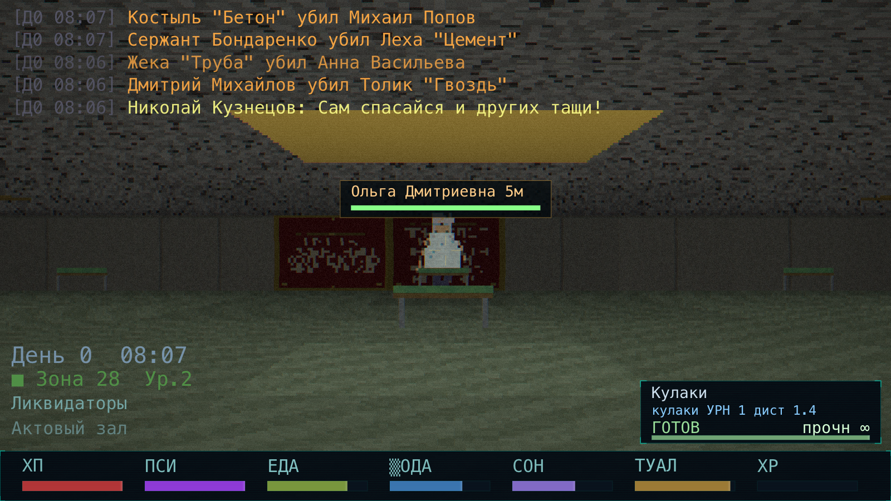
Старт не в пустоте: жилая зона, NPC, HUD, вылазка начинается рядом с домом.
Дом
кухни, туалеты, шкафчики, соседи
Лифт
переход между микромирами
Самосбор
сирена, туман, укрытия, перестройка
След
кровь, контейнеры, смерти, слухи
Крыша / антенны
Министерство / архивы
Жилая зона / старт
Коллекторы / трубы
Мясной низ / Пустота
Геометрия вылазки
Игрок погружается через маршрут: подготовка, лифт, риск, возврат
Картинка для треда должна объяснять цикл одним взглядом: безопасная комната рядом, опасность дальше, самосбор сверху, последствия сзади.
Пункт сборов
вода, хлеб, бинт, патроны, документы
САМОСБОР
поле перестраивает локальный маршрут
Убежище
решение: бежать, ждать или рисковать
Как читать схему
Синий
безопасная стартовая опора, где игрок готовит вылазку.
Зеленый
люди, торговля, задания, слухи, фракционная зона.
Красный
бой, монстр, кража, закрытая дверь, долг или запретный лут.
Фиолетовый
самосбор: меняет поле, а не просто рисует туман.
Желтая линия
маршрут игрока: вернуться важнее, чем просто зайти глубже.
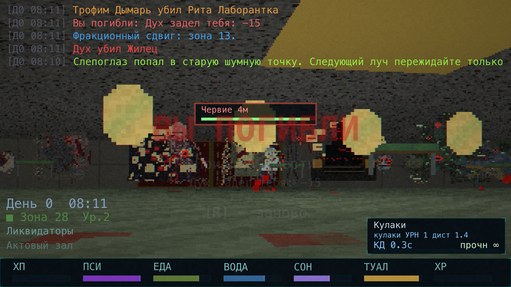
Бой и HUD должны читаться как часть маршрута.
Вертикаль и масштаб
Лифт уводит через домены: быт, документы, трубы, мясо, пустота
Эта картинка показывает масштаб мира без технических координат: чем дальше от жилого центра, тем страннее правила, но каждый слой остается игровой зоной.
Крыши и антенны
свет, воздух, дальние сигналы
Министерство
архивы, пропуска, очереди, протокол
Квартиры
соседи, коммуналки, долги, бытовой ужас
Жилая зона
старт, подготовка, первые NPC
Коллекторы
вода, трубы, насосы, лаборатории
Мясной низ / Пустота
культ, хтонь, протоколы, финальное давление
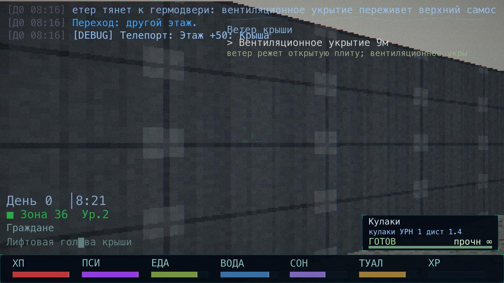
Крыша: бетон, небо, антенны
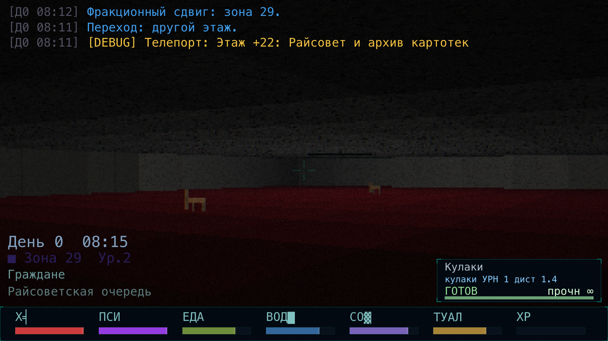
Министерство: документы и контроль
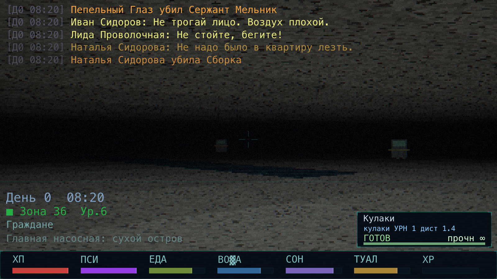
Коллекторы: вода и техника
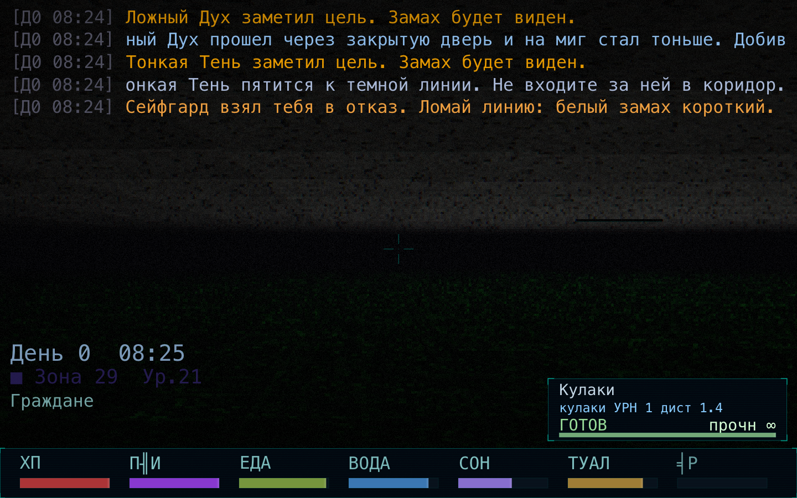
Пустота: протоколы и поздняя угроза
Самосбор как зрелище и система
Сирена делает знакомое место чужим
Самосбор нужно показывать как драму: было, предупреждение, туман, укрытие, перестройка, остаток. Это продает идею лучше, чем список внутренних названий.
Герма / убежище
не текстовый бонус, а маршрутное решение
Последствия
остатки, слухи, дефицит, следы, измененная геометрия
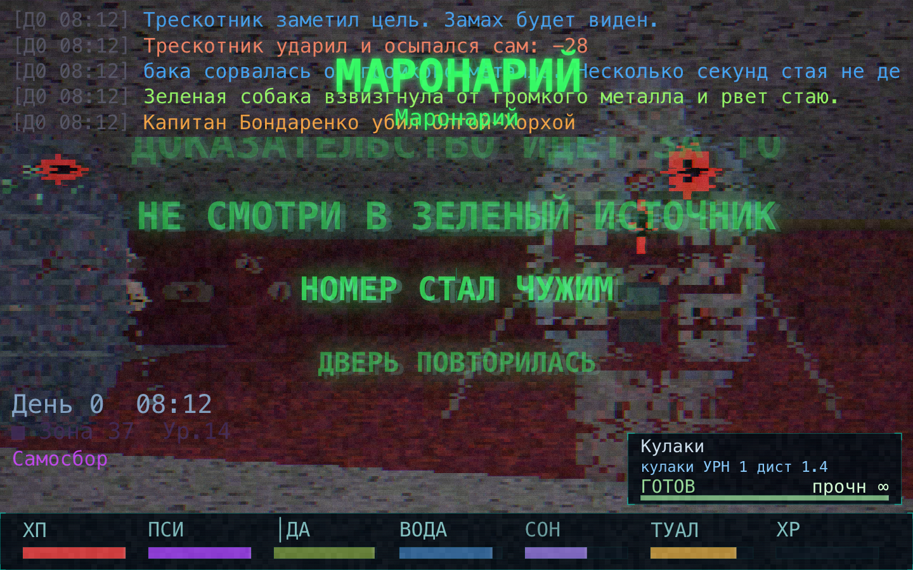
Визуальная фаза: туман, сигнал, потеря привычной ориентации.
7вариантов самосбора: меняет, удаляет, создает, давит.
44события последствий после активной фазы.
33режиссерских событий: предупреждения, патрули, дефицит, слухи.
1главное решение: укрыться, прорваться или рискнуть.
Экология угроз
Монстры объясняют мир через правила, а не только через вид
Хорошая картинка должна показывать, что враги связаны с бытом: свет, вода, документы, еда, дверь, шум, туман, ложный лифт.
Свет
лампы, темные углы, вспышки, линии выстрела
Вода
лотки, трубы, мокрая броня, сухая кромка
Документы
бумажный запах, печати, протоколы, архивы
Еда и приманка
стаи, мусор, мясо, запах и отвлечение
Дверь
ложная безопасность, засадник, псевдолифт
Шум
вой, шаги, удар по металлу, последний звук
Туман
смещение силуэта, боковой удар, плотный карман
След
кровь, ожог, паутина, слух, редкая добыча
67типов монстров
67экологических правил
577слухов
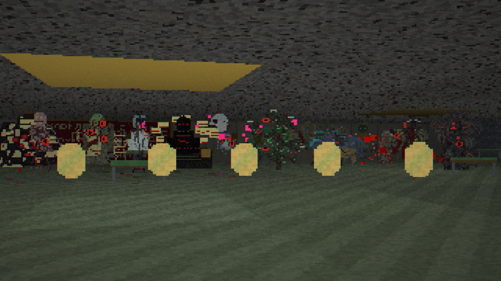
Бытовая угроза рядом с игроком.
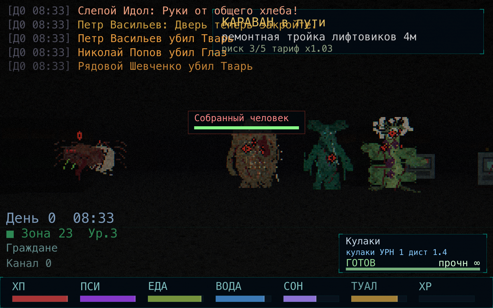
Аномалия как правило движения.
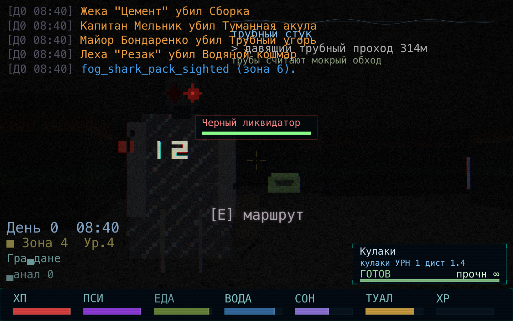
Ложная безопасность и странное укрытие.
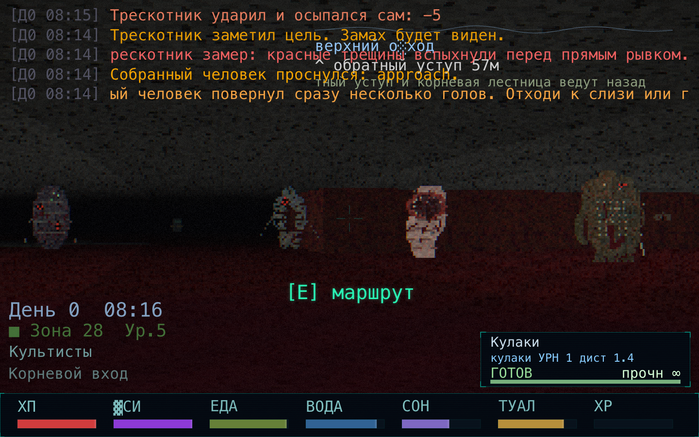
Поздний маршрут: мясо, культ, давление.
Один кадр для закрепа
Что уже сделано: масштаб, цикл, графика, погружение
Итоговый постер для шапки: слева факты из кода, справа реальные кадры, внизу понятная формула игры.
Шапка в одну фразу
ГИГАХРУЩ - браузерный survival horror / ARPG shooter про вылазки в безграничной бетонной хрущевке, где подготовка, NPC, фракции, монстры и САМОСБОР оставляют последствия.
41 авторская остановка
свои правила, NPC, лут, решения
54 процедурные остановки
зерно забега, опасность, фракция, аномалия, уклон к монстрам
434 предмета
вода, еда, документы, оружие, инструменты, образцы
399 шагов побочных квестов
локальные истории, поручения, последствия
67 монстров
не картинки, а правила вылазки
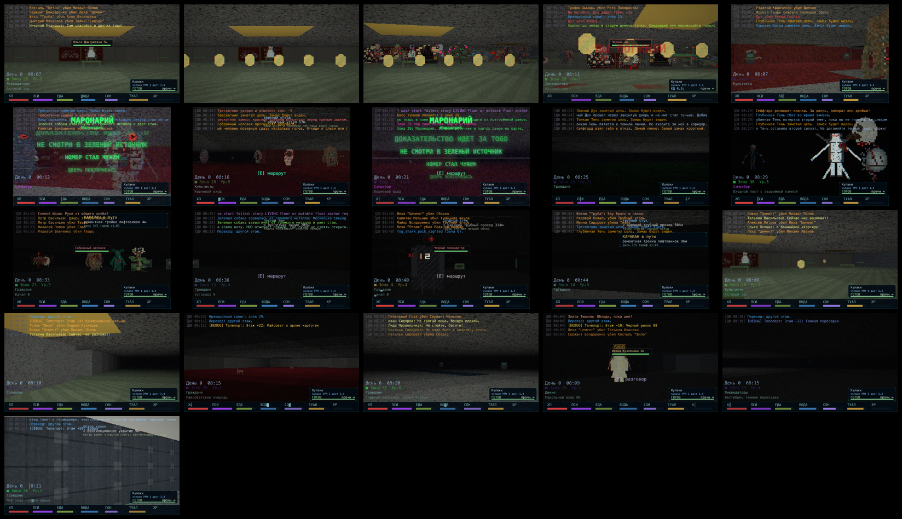
Реальные кадры: старт, бой, самосбор, коллекторы, Ад, Пустота.

Промо-обложка: бетонный survival horror.
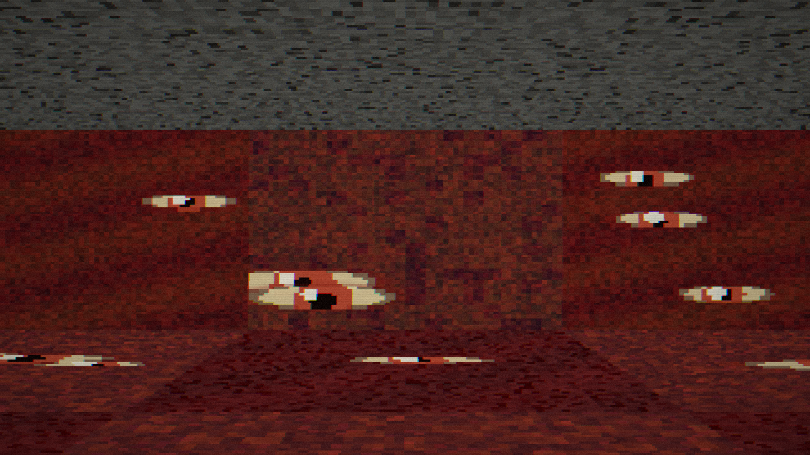
Нижние уровни: хтонь, глаза, протокол.